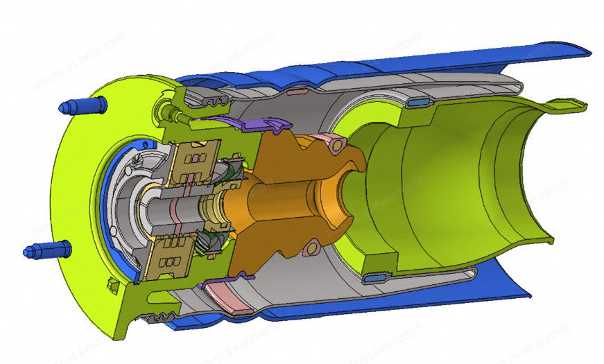

In my engineering practice, I integrate Deep Learning technologies with classical mechanics to optimize key suspension components. I have successfully implemented proprietary AI-driven methodologies that prove how AI—when guided by an experienced engineer—significantly accelerates product development and reduces costs.

Traditional approaches to air-spring design relied on time-consuming iterations, where engineers spent weeks manually fine-tuning geometries. This led to high production costs and technical limitations, as manual optimization reached its peak in terms of matching the required force-displacement curves.
I replaced the traditional approach with a holistic optimization process using:
Through this proprietary approach, I achieved a design that meets rigorous technical requirements without the need for additional, costly components. This resulted in:
This approach not only solved a specific technical challenge but also established a scalable platform for future, intelligent design of pneumatic systems.